CEPAS TINTAS
-
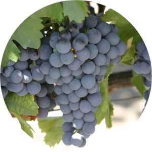
Malbec ORIGEN: Nacida en el sudoeste francés, en donde suele formar parte del corte de los vinos. Como varietal se elabora en Cahors, pero sus características son distintas a las del malbec argentino. Es la cepa tinta más extendida y característica de nuestra vitivinicultura. CARACTERISTICAS: Produce un vino de buen cuerpo y color. Sin temor, puede afirmarse que el malbec argentino es el mejor y más personal del mundo, cualidad reconocida por los más importantes expertos. REGIONES DE CULTIVO: Francia, Italia, Chile, Estados Unidos, Perú, Uruguay, Australia, Nueva Zelanda.
-
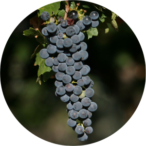
Cabernet Sauvignon ORIGEN: CARACTERISTICAS: REGIONES DE CULTIVO:
-
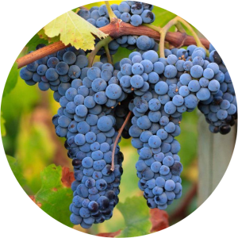
Merlot ORIGEN: CARACTERISTICAS: REGIONES DE CULTIVO:
-
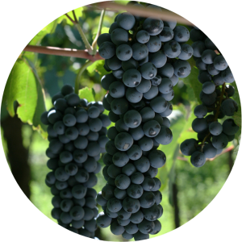
Bonarda ORIGEN: CARACTERISTICAS: REGIONES DE CULTIVO:
-
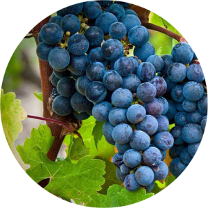
Cabernet Franc ORIGEN: CARACTERISTICAS: REGIONES DE CULTIVO:
-
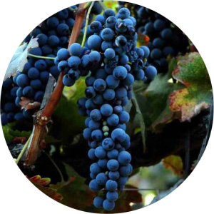
Syrah ORIGEN: CARACTERISTICAS: REGIONES DE CULTIVO:
-
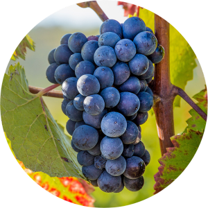
Pinot Noir ORIGEN: CARACTERISTICAS: REGIONES DE CULTIVO:
-
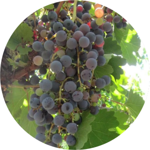
Criolla ORIGEN: CARACTERISTICAS: REGIONES DE CULTIVO:
-
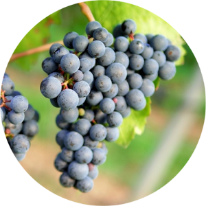
Tannat ORIGEN: CARACTERISTICAS: REGIONES DE CULTIVO:
-
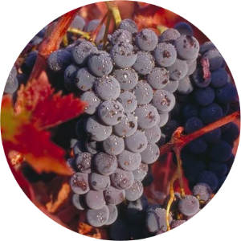
Zinfandel ORIGEN: CARACTERISTICAS: REGIONES DE CULTIVO:
-
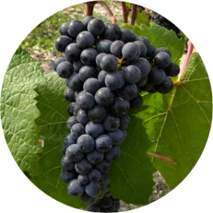
Petit Verdot ORIGEN: CARACTERISTICAS: REGIONES DE CULTIVO:
-

Tempranillo ORIGEN: CARACTERISTICAS: REGIONES DE CULTIVO:
-

Garnacha ORIGEN: CARACTERISTICAS: REGIONES DE CULTIVO:
-
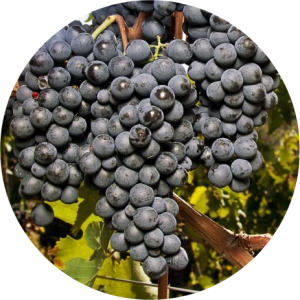
Sangiovese ORIGEN: CARACTERISTICAS: REGIONES DE CULTIVO: